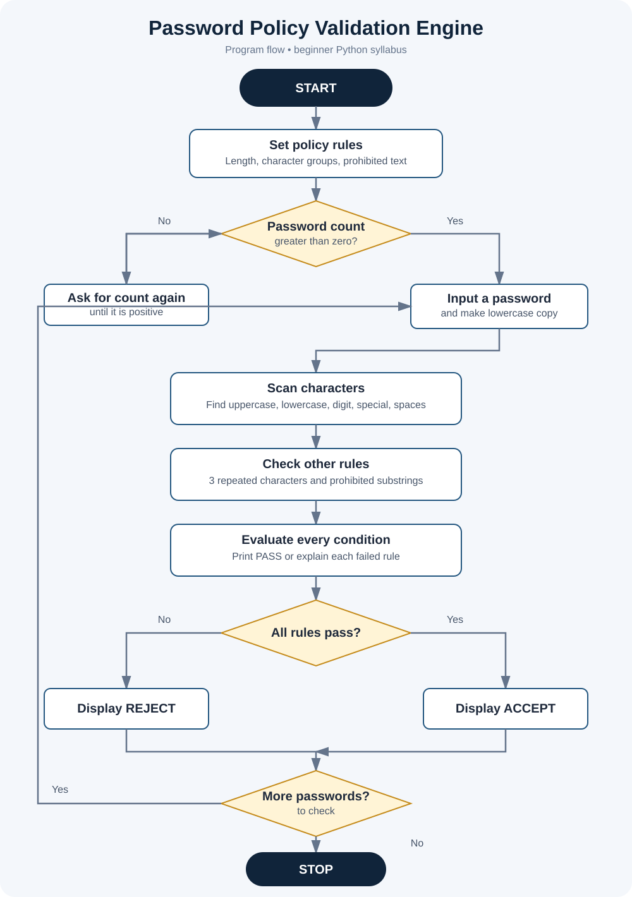
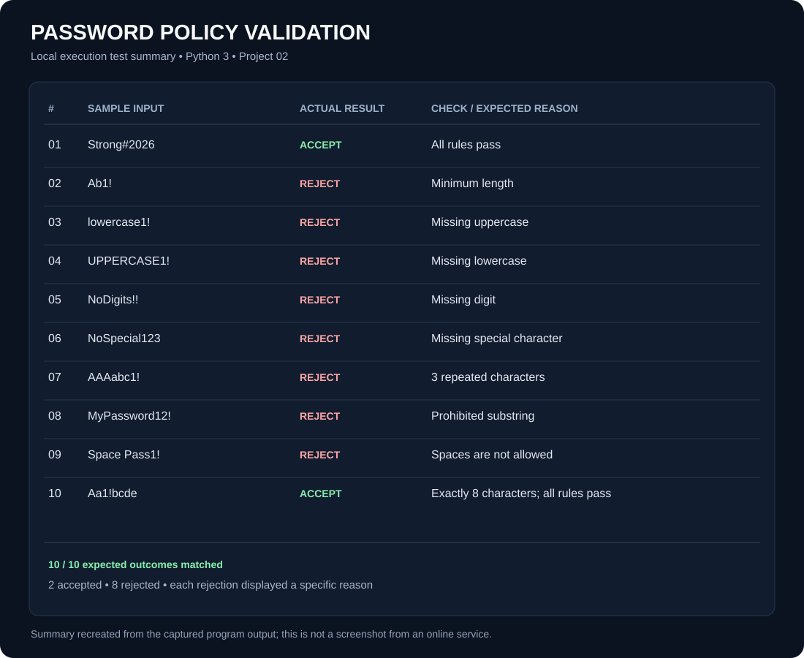

Project files
Open the source, supporting documentation, or test-output summary.


Policy assumptions
- At least 8 characters.
- At least one uppercase letter, lowercase letter, digit, and special character.
- No spaces and no character repeated three times consecutively.
- Reject case-insensitive occurrences of
password,123456, andqwerty.
These are documented classroom assumptions because the case study does not specify exact thresholds. This is an educational example, not a guarantee of real-world password security.
Flowchart

Test run summary
The Python program was run locally with 10 sample inputs: 2 accepted and 8 rejected as expected.

Run it yourself
Open a terminal in this folder and run:
python password_policy_validation.py